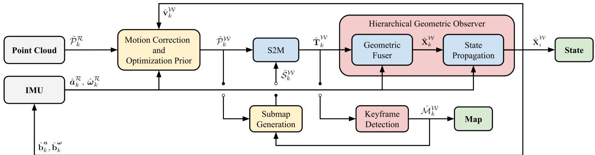
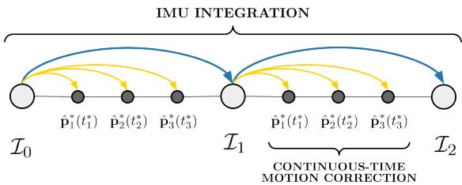

原图注（Fig. 1）：Framework overview of D-LIOM. In “Measurement Preprocessing,” the inputs from multiple LiDARs and an IMU are synchronized to the timestamp of the primary LiDAR, and the IMU pre-integration is used to predict the initial value of the relative motion between two scans. In “System Initialization,” all the starting states are roughly estimated and the system is aligned with the world frame.
（中译：D-LIOM 的框架总览。在「测量预处理」中，来自多个激光雷达与一个 IMU 的输入被同步到主雷达的时间戳上，IMU 预积分用于预测两次扫描之间相对运动的初值。在「系统初始化」中，所有起始状态被粗略估计，并把系统对齐到世界坐标系。） 怎么看这张图：① 这是三篇里结构最完整的一篇，所以先看它。从左往右读：输入 → 预处理 → 初始化 → 前端 → 后端；② 找「多雷达」三个字在哪进来的——它在最左侧的输入处就被合并了，说明「多雷达支持」是这篇从架构层面就设计好的，不是事后补的；③ 注意前端是一条因子图（下一节会讲它放了哪三种因子），后端是子图对子图的回环。这是它和 FAST-LIO2 那种「一个迭代卡尔曼滤波走到底」的结构性差别。 顺带一个诚实说明：这篇论文的文件名里写着 2023，但正文的 DOI 是 10.1109/TMM.2022.3168423，出版年为 2022，发表在 IEEE Transactions on Multimedia（TMM），文件名里的 2023 是「当前版本年」。本课一律按 TMM 2022 处理。
要特别说清的是：它省的并不是 IMU。它照用 IMU——一个非线性几何观测器负责给出位姿、速度与偏置，原文强调这个观测器有全局收敛的性质。它省的也不包括「不提特征」这件事之外的预处理：只做了一个 1 m × 3 m 的盒子滤波（用来滤掉打到自身车体/机体的点）和轻量体素降采样，不提角点、也不提平面点。

原图注（Fig. 2）：System Architecture. DLIO's lightweight architecture combines motion correction and prior construction into a single step, in addition to removing the scan-to-scan module previously required for LiDAR-based odometry. Point-wise continuous-time integration in W ensures maximum fidelity of the corrected cloud and is registered onto the robot's map by a custom GICP-based scan-matcher.
（中译：系统架构。DLIO 的轻量架构把运动补偿与先验构造合并成一步，同时去掉了以往激光里程计必需的 scan-to-scan 模块。在世界坐标系下的逐点连续时间积分保证了矫正点云的最高保真度，并由一个定制的 GICP 扫描匹配器把它配准到机器人的地图上。） 怎么看这张图：① 这张图就是「轻量」两个字的施工图——请对准图注里的两个动作去找：运动补偿与先验构造合成了一块、scan-to-scan 那条线不见了；② 顺着箭头找「逐点连续时间积分」在哪一步发生，它在点云进入配准之前；③ 右边那个 GICP 扫描匹配器是它和 FAST-LIO2 的分岔点之一：一个用迭代卡尔曼，一个用 GICP 直接把点云对到地图上。

原图注（Fig. 4）：Continuous-Time Motion Correction. For each point in a cloud, a unique transform is computed by solving a set of closed-form motion equations initialized at the closest preceeding IMU measurement. This provides accurate and parallelizable continuous-time motion correction.
（中译：连续时间运动补偿。对点云中的每个点，通过求解一组闭式运动方程来计算一个唯一的变换，这组方程以最近的前一个 IMU 测量为初值。这提供了精确且可并行的连续时间运动补偿。） 怎么看这张图：① 请在这张图上找「每个点一个变换」这件事是怎么画的——这是它与「整帧共用一个位姿」最直观的差别；② 注意「以最近的 IMU 测量为初值」这句：它说明这套闭式方程不是凭空来的，而是被 IMU 数据一段一段锚住的；③ 图注最后那个词 parallelizable（可并行）是工程上的重点——逐点算听着很贵，但只要能并行，代价就摊平了。 按原文顺序推断：Fig. 3 是「粗到细去畸变」的两步示意，这张 Fig. 4 是紧接着它对「逐点唯一变换」的展开。
它的数字与边界
精度
在 Newer College 与 UCLA 自采数据上，全连续版本在 5 个序列上都拿到了最低的 RMSE 与最低的平均单帧耗时。在最考验运动补偿的那段（旋转达到 3.5 rad/s），误差从「不做补偿」的 0.1959 m 降到 0.0612 m。
原图注（Fig. 1）：While a local map (top) helps keep computation bounded, it limits the association only to recent marginalized features, which gives chance to estimation drift relative to the initial state. In contrast, with a global map, we can achieve early association with the earliest features (white box) and reinforce global consistency.
（中译：局部地图（上）有助于把计算量限制住，但它把关联限制在最近被边缘化的特征上，这就给了估计相对于初始状态漂移的机会。相反，用全局地图时，我们可以和最早的特征（白框处）建立关联，从而加强全局一致性。） 怎么看这张图：① 上下两张图唯一的区别就是地图范围：上图是局部、下图是全局；② 请找那张图里被白框标出来的位置——那是最早被扫到的特征；③ 关键的一问是：当前帧能不能和那么早的特征建立关联？局部地图的答案是「不能」（那些点早被边缘化掉了），全局地图的答案是「能」。这就是 SLICT 要用全局面片地图的动机。
原图注（Fig. 2）：Illustration of surfel and the tree-like structure: A voxel i contains a set of points, which (in this example) contains two subsets, encapsulating the points in the voxels m, n at smaller scales. Each of the sets define a surfel whose attributes are described in Section II-D1.
（中译：面片与树状结构的图示。体素 $i$ 包含一个点集，在本例中它又包含两个子集，分别封装了更小尺度的体素 $m$、$n$ 中的点。每一个点集都定义了一个面片，其属性在正文 II-D1 节描述。） 怎么看这张图：① 这张图是「多尺度」这三个字最直观的数据结构说明——请顺着父子关系看，同一处表面在不同粗细的格子里各有一个面片；② 注意父体素的点集包含子体素的点集，所以粗面片不是另外算出来的，而是把小面片的点合起来算的；③ 记住这一点，上一张自绘图里「一个点找不到对应时可以往粗尺度上找」就顺理成章了。 顺带说一处原文的小笔误：PDF 里出现过 contiuous-time（少了一个 n），按上下文应为 continuous-time，属排版笔误，不影响语义。
本节三篇里有两篇自称「连续时间」。请分别说出它们的实现方式，并说明它们和 B 样条的区别。
展开查看答案
Direct LIO：解析多项式。它先用 IMU 数值积分出一条粗轨迹（位置的三阶项里带着加加速度、姿态的二阶项里带着角加速度），然后在最近的前后两个 IMU 测量之间解一组只依赖时间 $t$ 的闭式方程——位置是时间的三次式、四元数是二次式。对每个点代一次 $t$，就得到它专属的变换。原文明确说的是「解一组解析方程，而不是解一个优化问题（比如样条拟合）」。
SLICT：滑窗线性插值。每个点的时间戳落进滑窗之后，姿态由相邻两个状态之间线性插值（旋转按角度插、平移按比例插）得到；而且它用原始点、不预先去畸变，畸变留到优化里一起解。原文还专门交代了这个选择：此前这一支里有用线性插值的、也有用 B 样条的（它点名了 MARS 用 B 样条），SLICT 选的是线性插值。
与 B 样条的区别：B 样条把轨迹写成「若干控制点加权求和」，权重由基函数给出，然后把控制点当成待优化的参数去解——它是一个优化问题。而解析多项式是闭式求解：参数从 IMU 积分直接得到，代进去就有结果；滑窗线性插值则是在优化的过程中被待求的滑窗状态所决定，谈不上控制点。
所以准确的表述是：它们同属「连续时间」这个大类，但实现路径不同；本节的 Direct LIO 与 SLICT 都不是 B 样条。B 样条那一路在第二季 0031／0032 课。